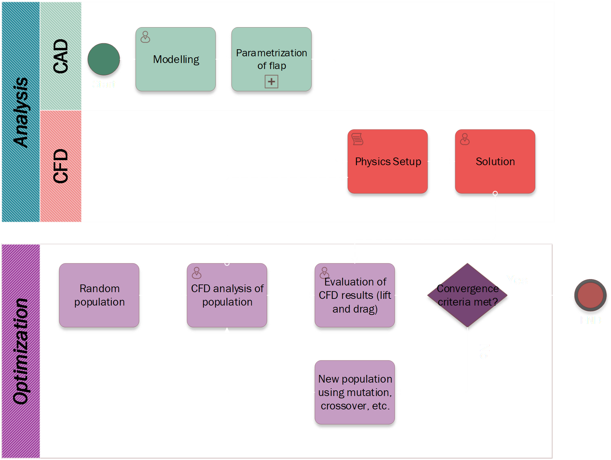
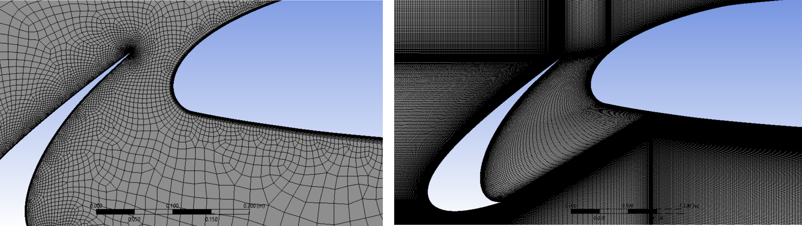
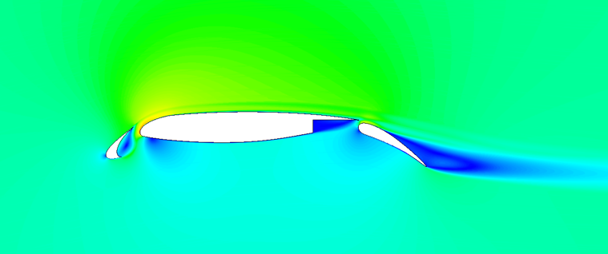
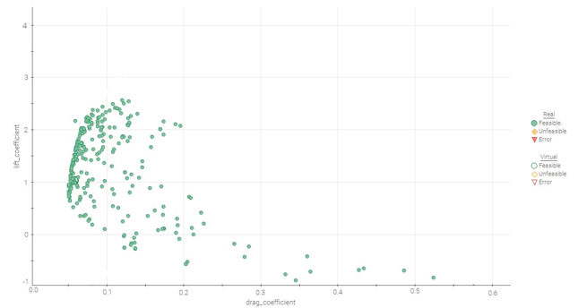
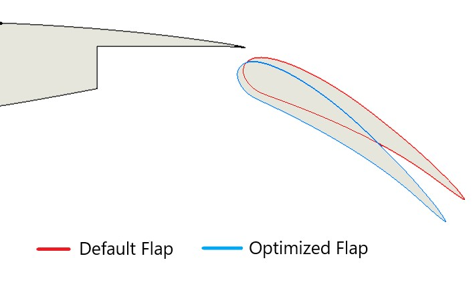

Flow of CAD, CFD and Optimization processes

Unstructured vs Structured mesh near the leading edge

Velocity contours around the wing

Pareto optimal front generated by the GA

Illustration of optimized Flap Position
The lift and drag characteristics of a multi-element wing are highly sensitive to the position of flaps and slats. This project aimed to find the optimal flap configuration to maximize aerodynamic performance through computational optimization, addressing the inherent trade-off between lift maximization and drag minimization.
Project Approach:
- Developed parametric 2D CFD model in Ansys Fluent for rapid iteration
- Implemented structured grid generation for consistent mesh quality
- Employed NSGA-II genetic algorithm through ModeFRONTIER optimization software
- Automated CFD simulation workflow for efficient design space exploration
Objectives
- Maximize Lift (CL)
- Minimize Drag (CD)
Decision Variables
- Flap X-position (±20mm)
- Flap Y-position (±12mm)
- Flap angle (±30°)
Key Results:
- 9.2% increase in lift coefficient (CL)
- 7.8% reduction in drag coefficient (CD)
- 8.3% improvement in lift-to-drag ratio (CL/CD)
- Identified Pareto-optimal solutions for performance trade-offs
Technical Challenges Overcome:
- Managed non-linear sensitivity of aerodynamic performance to small geometry changes
- Balanced computational cost with design space exploration requirements
- Ensured mesh independence while maintaining parametric flexibility
- Coordinated parallel workflow between ModeFRONTIER and Ansys Fluent
CFD Optimization
NSGA-II
Ansys Fluent
ModeFRONTIER
Parametric Design
Aerodynamics
Genetic Algorithm
High-Lift Devices